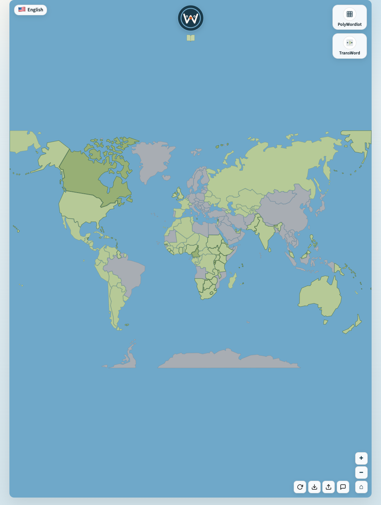
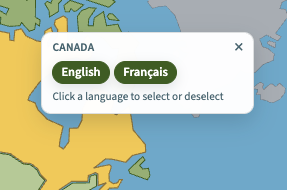
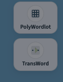
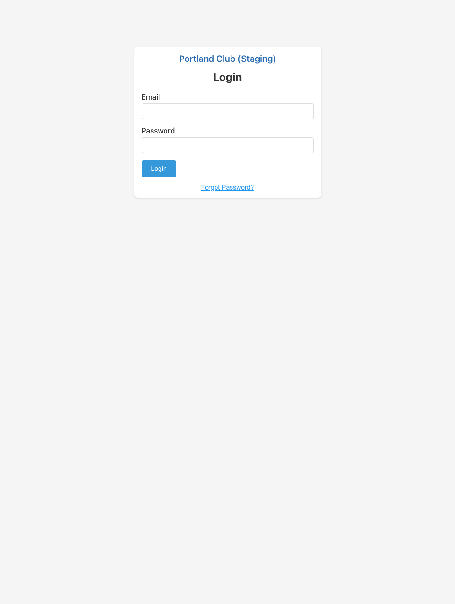
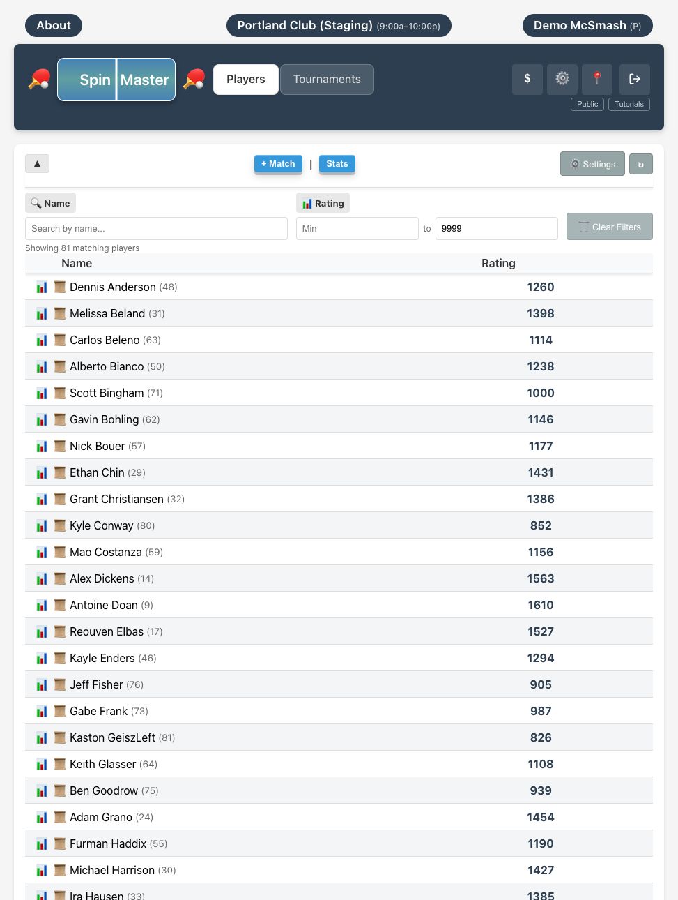
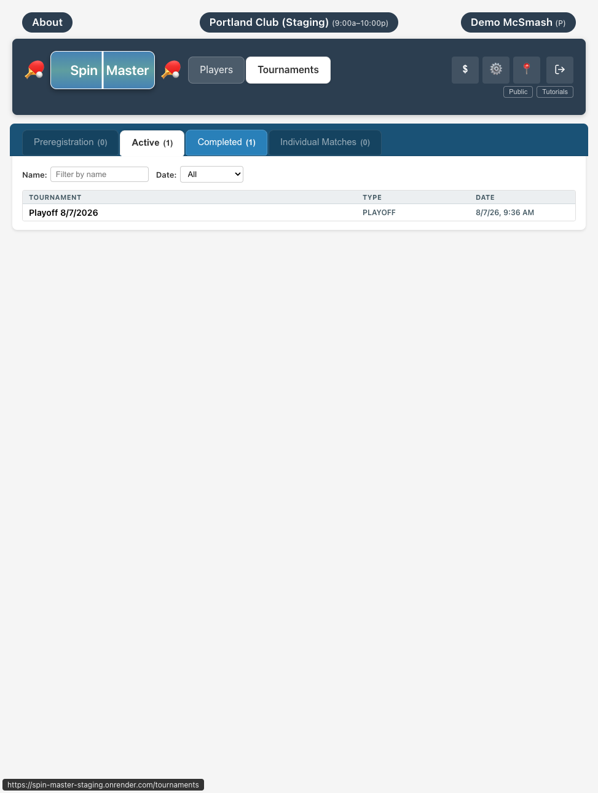
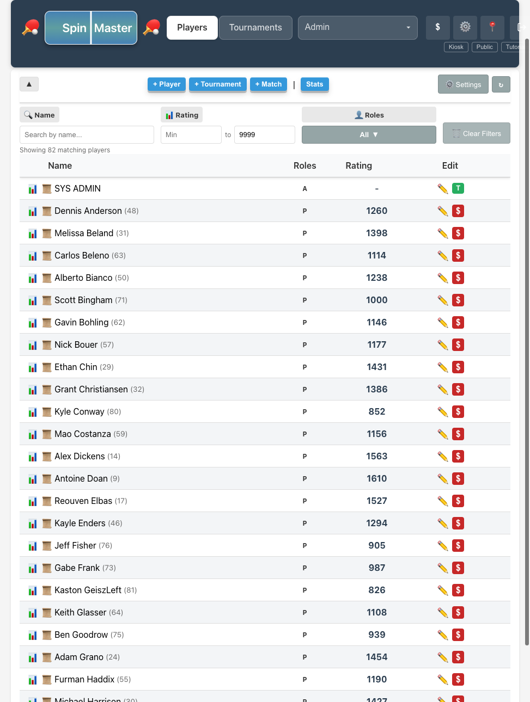

About
I live in the wilderness of Columbia River Gorge not far from Portland. I retired a little over three years ago after spending more than forty years developing backend software system. The last long stretch over 15 years I was involved in the development of the first commercial distributed storage system using information disparesal algorithsm.
I did not stop thinking about software and developing new stuff, it is something I like to think about. And with advancment of the AI tools I have a collaborator who is reliable and honest most of the time.
Most days thinking about software I wwas coming back to ideas of ensuring resilience of software systems that means - the development of Faultitude.
I play table tennis. I hike. Hiking does not need software. The club does. That's how Spin Master was born.
If I choose a profession today, I may consider linguistics. But it is too late, what is not is to implement some that could be played in many languages. To write games with AI help is easy, what is not is to find wordsets for these games. And that it is something I am thinking about as well.
I want Faultitude in front of people who work on testing or system developers that could enhance their existing tools and practices. I want Wordaholic to haev more inteesting games and more supported languages. I would like to see Spin Master running at my table tennis club, or at least a few clubs.
 Faultitude
Faultitude
Professional interest.
What it is
Fault injection for Java applications. This is my attempt to build a comprehensive source code aware fault injection platform. It is the result of several years of analysis and research into the importance of fault injection for large distributed systems at the high level of product maturity. It is not a replacement for existing testing techniques and tools but an additional instrument for proving system resilience under adverse conditions.
The code is private. The paper and a Docker demo are public. The README in the public repository explains the motivation behind the decision to release documentation only. A live presentation with a working demo of the platform is in this repo.
Details and inspiration
I felt the necessity for such a tool while working on a distributed storage system from 2007 to 2022. The recognition of the fact that adverse conditions should be reproducible in a reliable and repeatable form came later in the development cycle. The system was working in the large lab environments but failing infrequently in production under very suspicious and rare conditions. I suspect that many practioners could relate to this observation.
I should address the inevitable AI question: what is its role in this project? It is significant, I most likely would not be able to make it happen alone and surely not in the time frame it was done. Of course, I used AI tools to search for papers and products in the area of interest. I used AI to draft technical documents and papers. The papers were rigorously edited. But the ideas, the architecture and the major design decisions are mine and mine only. A significant portion of the code is handwritten but I used AI tools heavily in the areas of bytecode generation.
Future work and references
The project is not complete but functional. I have implemented most of the core features needed to prove the concept and to use it in many important real-life production cases. The platform is open in every sensible direction: engineers can add application specific features, or maybe general purpose ones that I missed.
This platform is for Java only. That covers a lot of territory but clearly far from all. I am working on extending this idea into compiled languages. And possible interpretive languages. My hope is a single platform that can test and prove resilience of any platform or language. I need help and collaboration.
Public repository · Why Faultitude · Paper · White paper · Product brief
 Wordaholic
Wordaholic
Linguistic work, in the form of games.



Main idea
Offline word games built around real languages and word lists. I want a platform that keeps words from many languages, with enough metadata to generate the word set a game needs. It is far from complete. After trying to build my own workflow for those lists, I concluded this should rely on extensive work already done. That is what I am in the process of doing. Another bottleneck are the original ideas for games.
Implemented games
- PolyWordlot — a Wordle-style game across languages, with daily and training play.
- TransWord — word transformation ladders. You change one word into another, step by step.
 Spin Master
Spin Master
Web development practice, for a real club.
Player role user demo.mc.smash@gmail.com password demo123
Administrator role user demi.von.smash@gmail.com password demo123




Purpose and experience
Table tennis: ratings, tournaments, history, statistics, payment plans, payments, check-ins and check-outs. Built to be used, not only to learn the stack. This is my first intrusion in the world of web apps. Never ever did I do it before. It was a learning curve in AI usage: the initial codebase was a complete garbage. It took me a week to guide AI to a full system rearchitecture, and I realized that nothing will replace the good design. Not yet at least. AI has written 100% of the code here under my constant supervision and guidance.
How I plan to use it
The system is in test mode at my table tennis club in Portland. I want it to run a real club night: check-in, ratings, tournaments. If it holds up there, I want other clubs to be able to use it too.
Contact
If you want to talk about Faultitude, word lists, or the club app, write to me.